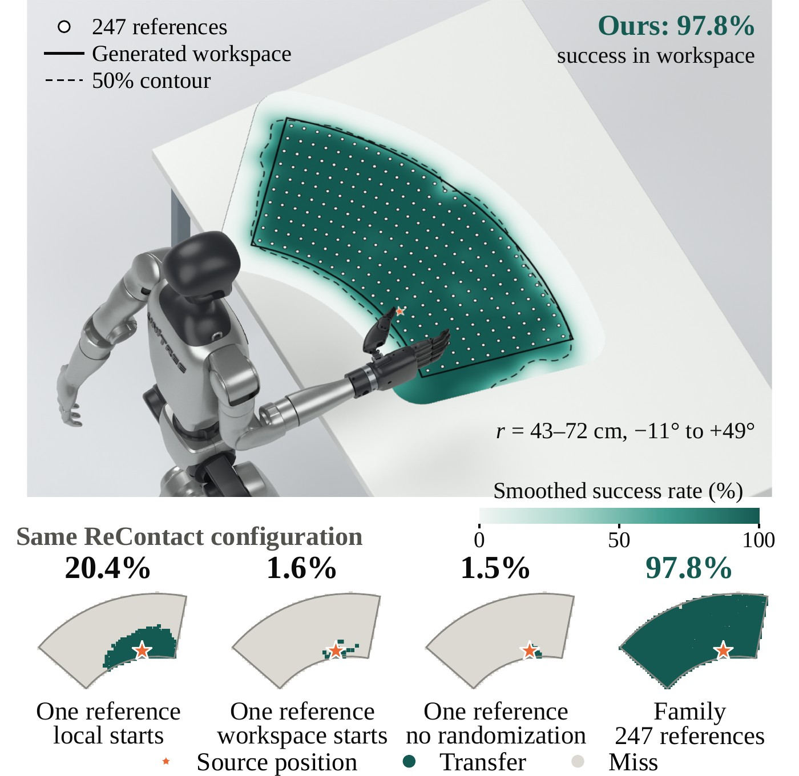

A Unitree G1 moves a 1.9 kg box from a side clamp through its thigh to a two-palm hold, and back. Front view and side close-up.
Supplementary video
Simulation and hardware in three minutes
English subtitles, no audio.
Unitree G1
Real robot and simulation
Regrasp, carry, regrasp, place on the floor
2×
Side-clamp pickup, thigh-supported regrasp, turn and loaded walk, reverse regrasp and floor placement.
Forward and reverse thigh-supported regrasps
1.5×Box A · 0.88 kg
1.5×Box B · 0.7 kg
1.5×Box B · 1.0 kg
1.5×Box B · 1.4 kg
1.5×Box B · 1.5 kg
1.5×Box B · 1.9 kg
Thigh-supported regrasp
Reverse regrasp
Walk-then-grasp
Simulation
Real robot · 1.25×
Under-arm transfers and irregular-object grasps
Under-arm box carry
Tissue-pack transfer
Spray-bottle grasp
Banana grasp
From first-person video
Hand-held objects, whole-body references
Hand-held grasps filmed from the first-person view become whole-body G1 references.
First-person video
RH56F1 hand-only retarget
Whole-body reference
The hand is retargeted to a floating RH56F1 hand, rendered from the calibrated source camera in sync with the video; a planned whole-body approach brings the 23-DoF G1 to the grasp.
First-person video
RH56F1 hand-only retarget
Whole-body reference
The hand is retargeted to a floating RH56F1 hand, rendered from the calibrated source camera in sync with the video; a planned whole-body approach brings the 23-DoF G1 to the grasp.
First-person video
RH56F1 hand-only retarget
Whole-body reference
The hand is retargeted to a floating RH56F1 hand, rendered from the calibrated source camera in sync with the video; a planned whole-body approach brings the 23-DoF G1 to a grasp fitted to this retarget.
From third-person video
Same inputs, five retargeters
Every method receives the same body and object track and runs on G1 29-DoF.
Human video
ReContact
OmniRetarget
UMR
UMR + contact map
HOI-Retarget
Human video
ReContact
OmniRetarget
UMR
UMR + contact map
HOI-Retarget
Human video
ReContact
OmniRetarget
UMR
UMR + contact map
HOI-Retarget
Human video
ReContact
OmniRetarget
UMR
UMR + contact map
HOI-Retarget
Human video
ReContact
OmniRetarget
UMR
UMR + contact map
HOI-Retarget
Task families
One bottle demonstration, 200 references
Kinematic references
Nine of the 200 references.
Grasp rate over the generated workspace for Ours (ReContact). White dots: 200 references.
Policy rollouts
Position 1
Position 2
Position 3
Position 4
Deployment bottle-family policy with marker-based object localization.
Bottle grasp
One tube transfer, 247 references
Kinematic references
Nine of the 247 references.

Transfer success over the generated workspace: ReContact family policy (top) and single-reference versus family policies (bottom). White dots: the 247 references. Star: the source position.
Policy rollouts
Trial 1
Trial 2
Trial 3
Trial 4
Trial 5
Trial 6
Trial 7
Trial 8
One family policy. The tube position comes from the head camera's RGB image, and the nearest family reference runs.
The deployed checkpoint, at the reference nearest the source position.
Extended results
One human video, multiple robot bodies
Medium-box carry
Two-hand carry
Thigh-supported regrasp
Placement on the floor
Chair push
Human video
G1 · 29 DoF
G1 · 23 DoF
H1-2 · 27 DoF
H2 · 31 DoF
Booster T1 · 23 DoF
Retargeting comparison: chair push
Every method receives the same body and object track and runs on G1 29-DoF.